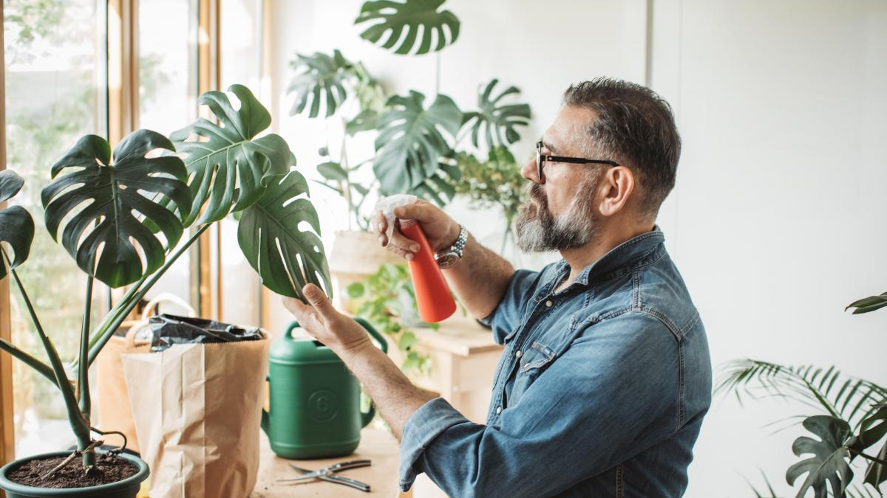

Nuestros Servicios

Diseño de Jardines
Ofrecemos servicios completos de diseño de jardines para crear espacios verdes únicos y personalizados. Nuestro equipo de expertos trabajará contigo para entender tus necesidades y deseos, y diseñar un jardín que no solo sea hermoso, sino también funcional.
- Diseño personalizado
- Selección de plantas
- Instalación de sistemas de riego
- Asesoramiento en mantenimiento

Mantenimiento de Plantas
Nuestros servicios de mantenimiento de plantas están diseñados para mantener tus espacios verdes saludables y vibrantes. Ofrecemos mantenimiento regular y cuidado especializado para todo tipo de plantas, ya sean de interior o exterior.
- Poda y recorte
- Control de plagas
- Fertilización
- Reemplazo de plantas

Asesoramiento en Plantas
Brindamos asesoramiento experto para ayudarte a elegir las mejores plantas para tu hogar o negocio. Nuestro equipo puede ayudarte a entender las necesidades de cada planta y cómo cuidarlas adecuadamente.
- Selección de plantas
- Asesoramiento sobre el cuidado
- Soluciones a problemas comunes
- Consejos de decoración